| Type Detailed | n | % Total Facilities |
|---|---|---|
| BOP | 2 | 1.41 |
| SPC | 5 | 3.52 |
| Other | 6 | 4.23 |
| CDF | 17 | 11.97 |
| USMS IGA | 39 | 27.46 |
| IGSA | 73 | 51.41 |
ICE Detention Guaranteed Minimums & Ghost Beds as of April 2021
immigration
An exploration of detention facility contract guaranteed minimums, where are they and what is the expected cost.
Introduction
This post is an exploratory data analysis (Tukey 1977) of ICE detention Guaranteed Minimums based on information reported in ICE’s FY21 year to date report as of April 15, 2021 (ICE 2021). The data on this page are now updated regularly and may be subject to change in the future. This post examines one snapshot in time. Future posts may attempt to further track changes over time.
In addition to looking at Guaranteed Minimums, effort is made here to examine the number of empty Guaranteed Minimum beds which, following Selman and Leighton’s (2010, 114) term of “ghost inmates” which originates in the private and for-profit corrections incarceration sector, are referred to here as “Ghost Beds.” As Selman and Leighton note because private prisons operate and make money on economies of scale, many for-profit private prison contracts contain clauses that facilities must remain 90% full and if they aren’t the contracts are structured to guaranteed payment for a minimum number of incarcerated persons. ICE facilities, both publicly and privately run, contain Guaranteed Minimums which are listed in the FY21 year to date report.
ICE’s FY21 year to date report lists each facility’s type, Average Daily Population (ADP) and contractual Guaranteed Minimums. Based on ADP and Guaranteed Minimums, it is possible to estimate the number of empty guaranteed beds or Ghost Beds. It is also possible to explore patterns of ADP, Guaranteed Minimums, and Ghost Beds by facility type.
Summary
For those who may not wish to read through the entire data exploration. A brief summary of some key findings are reported below.
Section 2 data exploration begins by looking at facility types, which appears in ICE’s data set as Type Detailed, as well as ADP by Type Detailed. Private facilities are the most common facility type, though arrangements with US Marshals Service (USMS) are also extremely common. It bears mention that USMS contracts with ICE are under studied and extremely problematic (Jameson 2020). Not technically private contracts, they operate on a distinct business model related to procurement. While Service Processing Centers (SPC) have the highest ADP by type, Inter-Governmental Service Agreements (IGSA) and Contract Detention Facilities (CDF) are more numerous.
Section 3 looks at Guaranteed Minimums generally and by Type Detailed. At present, there are 34390 guaranteed beds distributed among 50 facilities. There is a strong correlation between total ADP, termed Total Detained and Guaranteed Minimum, Total Detained population explains 46% of the variation in Guaranteed Minimums. As a type, IGSA’s have the largest share of Guaranteed Minimums overall, which is just under 2/3. On average, among facilities with Guaranteed Minimums, IGSA’s tend to have larger Guaranteed Minimums and IGSA’s are more numerous as a type. However, CDF’s, with just under 1/3, also have a large portion of Guaranteed Minimums. IGSA’s and CDF’s make up 90% of the facilities with Guaranteed Minimums and 92% of the Guaranteed Minimum beds.
Section 4 looks at Ghost Beds generally, by Type Detailed and explores Guaranteed Minimum as well as Ghost Bed costs. The mean Guaranteed Minimum per diem is $123.04 (SD=43.02). The total estimated cost of Guaranteed Minimums is $4,308,391 per day, $129,251,730 per month, or $1,572,562,715 per year. At present 2/3 of Guaranteed Minimums are empty Ghost Beds. At the present rate of Ghost Beds, which may change, the total estimated cost is $2,952,525 per day, $88,575,750 per month, or $1,077,671,625 per year.
Facility Types
The FY21 year to date report lists 142 facilities, five of which are not located on the continental US (Figure 1). ICE lists six kinds of facilities:
- Bureau of Prisons (BOP) are public facilities.
- Contract Detention Facilities (CDF), these are private facilities generally owned by a private prison company.
- Intergovernmental Service Agreement (IGSA), these are privately managed facilities owned by a county or municipality whose management is subcontracted to a private prison company.
- Service Processing Centers (SPC), are public facilities managed by ICE though often the security staff are subcontracted to a private company.
- US Marshals Service Intergovernmental Agreement (USMS IGA) are established US Marshals contracts with local jails that are used by ICE for immigration detention purposes. USMS IGA’s may be a mix of public and private facilities depending on whether local governments subcontract out jail management to a private contractor.
- Other
Facility Counts by Facility Type
Table 1 and Figure 2 show that by count the most common type of facility are IGSA’s (n=73) followed by USMS IGAs (n=39), and CDF (n=17). IGSA’s andCDF’s are private and USMS IGA’s may be a mix of public and private local jails (see list above). Regardless, between IGSA’s and CDF’s 63% (n=90) of ICE detention facilities by count are unambiguously privately managed. USMS IGA’s still operate more as “procurement not policy” in what is an “opaque and intricate business practice” (Jameson 2020: 283) in which local counties and municipalities view detention as a key source of income (Jameson 2020: 2839).
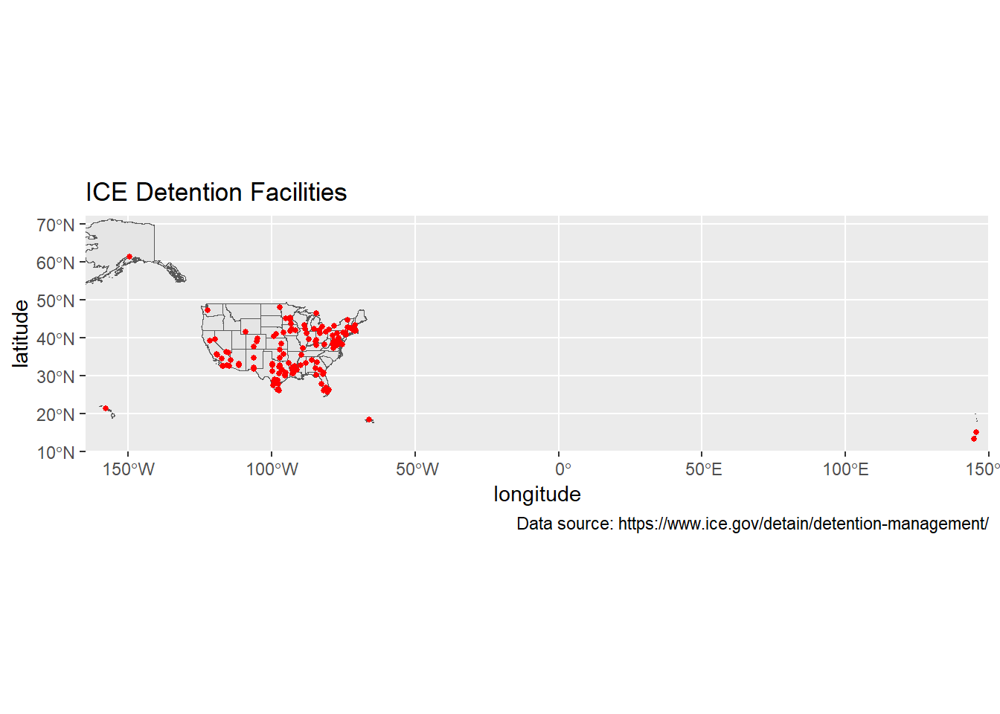
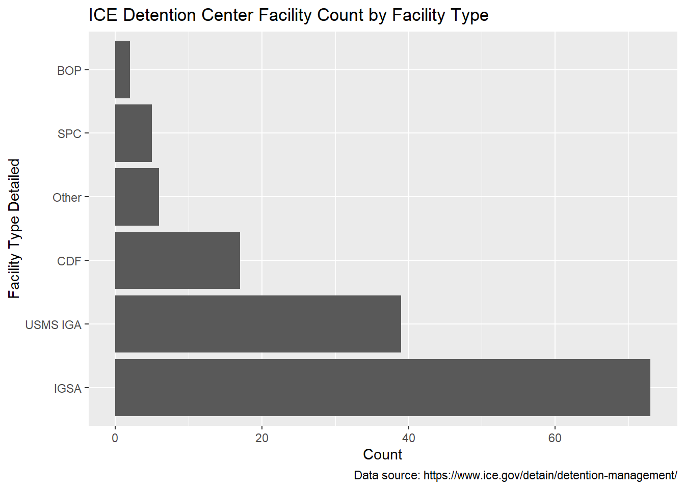
Figure 3 shows were ICE detention facilities are located based on facility type. IGSA’s and USMS IGA’s are more spread out while CDF’s, SPC’s, and Others are primarily located along the southern border.
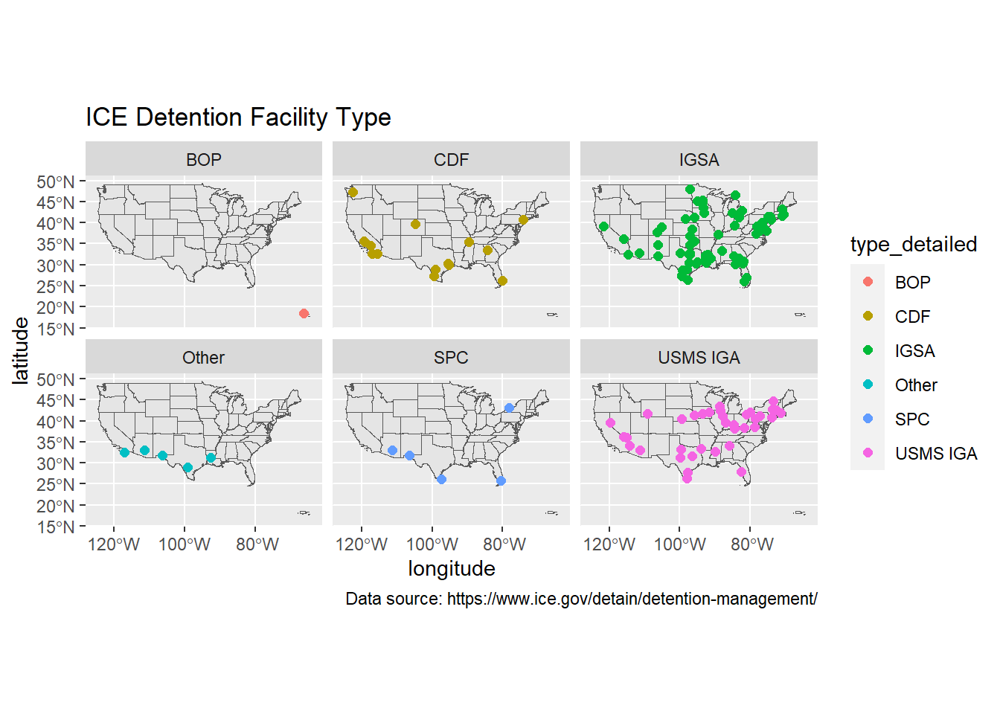
ADP by Facility Type
Based on ICE’s FY2021 year to date data table, the total ADP is presently 15,535, which is generally consistent with the detained population reported on the ICE Guidance on COVID-19 page for this time period. Examining total ADP by facility type shows that IGSA’s (n=8999) and CDF’s (n=3567), which are both private kinds of facilities, make up 81% (n=12566) of the total ADP (see Table 2. However, IGSA’s (n=73) and CDF’s (n=17) make up 63% of the total number of facilities. They hold a larger portion of the total ADP because these kinds of facilities are generally larger, though at present SPC’s appear to have a higher mean ADP though there are few of this kind of facility (n=5).
| Type Detailed | n | % Total Facilities | Total ADP | Mean ADP | SD ADP | % Total ADP |
|---|---|---|---|---|---|---|
| BOP | 2 | 1.41 | 20 | 10.00 | 9.90 | 0.13 |
| CDF | 17 | 11.97 | 3567 | 209.82 | 188.57 | 22.96 |
| IGSA | 73 | 51.41 | 8999 | 123.27 | 139.88 | 57.93 |
| Other | 6 | 4.23 | 177 | 29.50 | 48.88 | 1.14 |
| SPC | 5 | 3.52 | 1349 | 269.80 | 121.26 | 8.68 |
| USMS IGA | 39 | 27.46 | 1423 | 36.49 | 45.43 | 9.16 |
Looking at the distribution of ADP by ICE detention facility type, one can see that SPC’s have the highest mean ADP (M=269.80, SD=121.26), while CDF’s (M=209.82, SD=188.57) and IGSA’s (M=123.27, SD=139.88) have the next highest mean ADP (see Table Table 2. A combined violin-sina plot Figure 4 illustrates the distribution of ADP by ICE detention facility type (Hintze and Nelson 1998; Sidiropoulos et al. 2018). So while SPC’s presently have larger detained populations on average, IGSA’s and CDF’s are far more numerous. While USMS IGA’s (n= 39) are the second most numerous kind of facility they have a comparatively lower total ADP (n=1423) or by facility average ADP (M=36.49, SD=45.43).
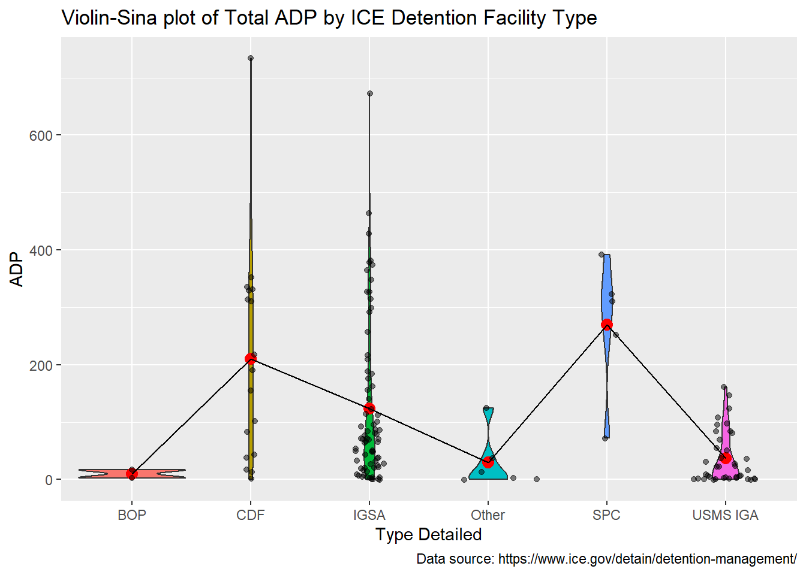
Guaranteed Minimums
Of the 142 facilities reported by ICE in the FY21 year to date dataset, 35% (n=50) have contractual guaranteed minimums (Table 3). The Pearson’s product-moment correlation between Guaranteed Minimum and Total Detained is positive, statistically significant, and very large (\(r = 0.68, t(48) = 6.40, p < .001\)). A linear model (estimated using OLS) was applied to predict Guaranteed Minimum with Total Detained. The model explains a statistically significant and substantial proportion of variance (\(R^2 = 0.46, F(1, 48) = 40.91, p < .001, adj. R^2 = 0.45\)). The effect of Total Detained on Guaranteed Minimums is statistically significant and positive (\(b=2.07, t(48) = 6.40, p < .001\)). Larger facilities have more guaranteed minimums.
Guaranteed Minimums by Facility Type
Facilities with guaranteed minimums are of three types: IGSA’s, CDF’s, and SPC’s (Figure 5 and Table 4).
| Facility | Type Detailed | Guaranteed Minimum | Total Detained |
|---|---|---|---|
| SOUTH TEXAS FAMILY RESIDENTIAL CENTER | IGSA | 2400 | 299 |
| LA PALMA CORRECTIONAL CENTER | IGSA | 1800 | 428 |
| LA PALMA CORRECTION CENTER - APSO | IGSA | 1800 | 378 |
| STEWART DETENTION CENTER | IGSA | 1600 | 673 |
| ADELANTO ICE PROCESSING CENTER | CDF | 1455 | 336 |
| SOUTH TEXAS ICE PROCESSING CENTER | CDF | 1350 | 734 |
| TACOMA ICE PROCESSING CENTER (NORTHWEST DET CTR) | CDF | 1181 | 311 |
| LASALLE ICE PROCESSING CENTER (JENA) | IGSA | 1170 | 464 |
| OTAY MESA DETENTION CENTER (SAN DIEGO CDF) | CDF | 1100 | 352 |
| ADAMS COUNTY DET CENTER | IGSA | 1100 | 348 |
| WINN CORRECTIONAL CENTER | IGSA | 946 | 365 |
| KARNES COUNTY RESIDENTIAL CENTER | IGSA | 830 | 112 |
| PORT ISABEL | SPC | 800 | 392 |
| JACKSON PARISH CORRECTIONAL CENTER | IGSA | 751 | 184 |
| BLUEBONNET DETENTION FACILITY | IGSA | 750 | 374 |
| MONTGOMERY ICE PROCESSING CENTER | CDF | 750 | 329 |
| EL VALLE DETENTION FACILITY | IGSA | 750 | 327 |
| HOUSTON CONTRACT DETENTION FACILITY | CDF | 750 | 190 |
| TORRANCE COUNTY DETENTION FACILITY | IGSA | 714 | 24 |
| BROWARD TRANSITIONAL CENTER | CDF | 700 | 331 |
| SOUTH LOUISIANA DETENTION CENTER | IGSA | 700 | 84 |
| RICHWOOD CORRECTIONAL CENTER | IGSA | 677 | 156 |
| IMPERIAL REGIONAL DETENTION FACILITY | CDF | 640 | 314 |
| EL PASO SERVICE PROCESSING CENTER | SPC | 600 | 323 |
| IRWIN COUNTY DETENTION CENTER | IGSA | 600 | 314 |
| GOLDEN STATE ANNEX | CDF | 560 | 83 |
| PRAIRIELAND DETENTION FACILITY | IGSA | 550 | 292 |
| FOLKSTON MAIN IPC | IGSA | 544 | 123 |
| DENVER CONTRACT DETENTION FACILITY | CDF | 525 | 218 |
| YORK COUNTY PRISON | IGSA | 500 | 327 |
| OTERO COUNTY PROCESSING CENTER | IGSA | 500 | 188 |
| IMMIGRATION CENTERS OF AMERICA FARMVILLE | IGSA | 500 | 101 |
| T. DON HUTTO DETENTION CENTER | IGSA | 461 | 71 |
| KROME NORTH SERVICE PROCESSING CENTER | SPC | 450 | 310 |
| DENVER CONTRACT DETENTION FACILITY (CDF) II | CDF | 432 | 38 |
| BUFFALO (BATAVIA) SERVICE PROCESSING CENTER | SPC | 400 | 252 |
| FLORENCE SERVICE PROCESSING CENTER | SPC | 392 | 72 |
| RIVER CORRECTIONAL CENTER | IGSA | 361 | 140 |
| IAH SECURE ADULT DETENTION FACILITY (POLK) | IGSA | 350 | 76 |
| MESA VERDE ICE PROCESSING CENTER | CDF | 320 | 43 |
| GLADES COUNTY DETENTION CENTER | IGSA | 300 | 257 |
| ELIZABETH CONTRACT DETENTION FACILITY | CDF | 285 | 102 |
| RIO GRANDE DETENTION CENTER | CDF | 275 | 155 |
| CAROLINE DETENTION FACILITY | IGSA | 224 | 176 |
| YUBA COUNTY JAIL | IGSA | 150 | 19 |
| DESERT VIEW | CDF | 120 | 13 |
| ALLEN PARISH PUBLIC SAFETY COMPLEX | IGSA | 100 | 64 |
| SAN LUIS REGIONAL DETENTION CENTER | IGSA | 100 | 54 |
| CALHOUN COUNTY CORRECTIONAL CENTER | IGSA | 75 | 114 |
| NORTHWESTERN REGIONAL JUVENILE DETENTION CENTER | IGSA | 2 | 0 |
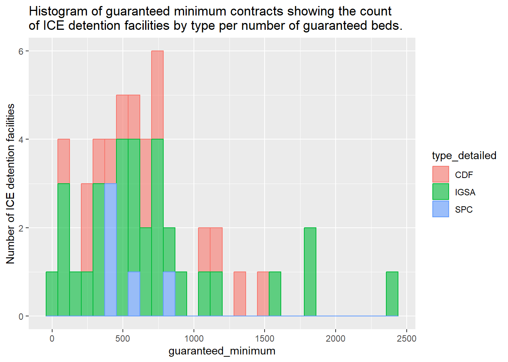
All 5 SPC’s have guaranteed minimums, making up 10% of the facilities with guaranteed minimums, and forming 7.68% of all guaranteed minimum beds. SPC’s average 528 guaranteed beds per facility which is the lowest of the three types. So SPC’s have guaranteed minimums at the highest rate, but they make up a relatively small proportion of the facilities with guaranteed minimums, and a small proportion of the total number of guaranteed beds.
There are 30 IGSA’s that have guaranteed minimums, 41% of this facility type has guaranteed minimums, they constitute 60% of the facilities with guaranteed minimums, which comprises 61.95 of all guaranteed minimum beds. IGSA’s average 710.17 guaranteed beds per facility which is the highest of any of the three types. IGSA’s constitute the majority of facilities with guaranteed minimums and the majority of guaranteed minimum beds. IGSA’s also have the highest per facility guaranteed minimum average. The four facilities with the most number of guaranteed minimum beds are all IGSA’s (Table 3).
There are 15 CFS that have guaranteed minimums, 88% of this type of facility has guaranteed minimums, they make up 10% of all facilities with guaranteed minimums , which comprises 30% of all guaranteed minimum beds, and as a type averages 696.2 guaranteed beds per facility. Thus, a very high proportion of this facility type has guaranteed minimums, but they make up a relatively small proportion of the total number of facilities with guaranteed minimums. CFS’s have average guaranteed minimums that are relatively close to IGSA’s.
Together, CDF’s and IGSA’s constitute 90% of the facilities with guaranteed minimums and 92% of the guaranteed minimum beds (Figure 6). The overwhelming number of guaranteed minimums are thus in private facilities.
| Type Detailed | n Facilities w. Guaranteed Minimum | % Facilities by Type w. Guaranteed Minimum | % Facilities w. Guaranteed Minimum | Total Guaranteed Minimum | % Total Guaranteed Minimum | Mean Guaranteed Minimum | SD Guaranteed Minimum |
|---|---|---|---|---|---|---|---|
| CDF | 15 | 88 | 30 | 10443 | 30.37 | 696.20 | 409.53 |
| IGSA | 30 | 41 | 60 | 21305 | 61.95 | 710.17 | 567.57 |
| SPC | 5 | 100 | 10 | 2642 | 7.68 | 528.40 | 173.30 |
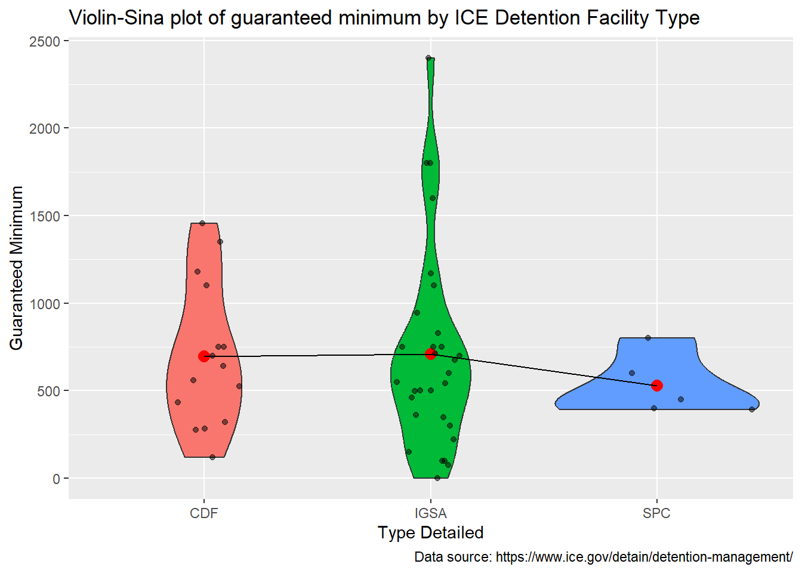
Ghost Beds
Of the 50 facilities that have guaranteed minimums, all but one report a facility Total ADP that is lower than the facility guaranteed minimum (Table 5). Only the Calhoun County Correctional Center has a total ADP that is higher than the facility guaranteed minimum number of beds. Unoccupied guaranteed minimum beds are termed “ghost beds.” There are a total of 22960 ghost beds that are located in CDF’s, IGSA’s, and SPC’s. Given this, during FY21 up to April, 67% of Guaranteed Minimum beds are Ghost Beds that are being paid for and are empty.
| Facility | Type Detailed | Estimated Ghost Beds | Guaranteed Minimums | Total Detained |
|---|---|---|---|---|
| SOUTH TEXAS FAMILY RESIDENTIAL CENTER | IGSA | 2101 | 2400 | 299 |
| LA PALMA CORRECTION CENTER - APSO | IGSA | 1422 | 1800 | 378 |
| LA PALMA CORRECTIONAL CENTER | IGSA | 1372 | 1800 | 428 |
| ADELANTO ICE PROCESSING CENTER | CDF | 1119 | 1455 | 336 |
| STEWART DETENTION CENTER | IGSA | 927 | 1600 | 673 |
| TACOMA ICE PROCESSING CENTER (NORTHWEST DET CTR) | CDF | 870 | 1181 | 311 |
| ADAMS COUNTY DET CENTER | IGSA | 752 | 1100 | 348 |
| OTAY MESA DETENTION CENTER (SAN DIEGO CDF) | CDF | 748 | 1100 | 352 |
| KARNES COUNTY RESIDENTIAL CENTER | IGSA | 718 | 830 | 112 |
| LASALLE ICE PROCESSING CENTER (JENA) | IGSA | 706 | 1170 | 464 |
| TORRANCE COUNTY DETENTION FACILITY | IGSA | 690 | 714 | 24 |
| SOUTH TEXAS ICE PROCESSING CENTER | CDF | 616 | 1350 | 734 |
| SOUTH LOUISIANA DETENTION CENTER | IGSA | 616 | 700 | 84 |
| WINN CORRECTIONAL CENTER | IGSA | 581 | 946 | 365 |
| JACKSON PARISH CORRECTIONAL CENTER | IGSA | 567 | 751 | 184 |
| HOUSTON CONTRACT DETENTION FACILITY | CDF | 560 | 750 | 190 |
| RICHWOOD CORRECTIONAL CENTER | IGSA | 521 | 677 | 156 |
| GOLDEN STATE ANNEX | CDF | 477 | 560 | 83 |
| EL VALLE DETENTION FACILITY | IGSA | 423 | 750 | 327 |
| MONTGOMERY ICE PROCESSING CENTER | CDF | 421 | 750 | 329 |
| FOLKSTON MAIN IPC | IGSA | 421 | 544 | 123 |
| PORT ISABEL | SPC | 408 | 800 | 392 |
| IMMIGRATION CENTERS OF AMERICA FARMVILLE | IGSA | 399 | 500 | 101 |
| DENVER CONTRACT DETENTION FACILITY (CDF) II | CDF | 394 | 432 | 38 |
| T. DON HUTTO DETENTION CENTER | IGSA | 390 | 461 | 71 |
| BLUEBONNET DETENTION FACILITY | IGSA | 376 | 750 | 374 |
| BROWARD TRANSITIONAL CENTER | CDF | 369 | 700 | 331 |
| IMPERIAL REGIONAL DETENTION FACILITY | CDF | 326 | 640 | 314 |
| FLORENCE SERVICE PROCESSING CENTER | SPC | 320 | 392 | 72 |
| OTERO COUNTY PROCESSING CENTER | IGSA | 312 | 500 | 188 |
| DENVER CONTRACT DETENTION FACILITY | CDF | 307 | 525 | 218 |
| IRWIN COUNTY DETENTION CENTER | IGSA | 286 | 600 | 314 |
| EL PASO SERVICE PROCESSING CENTER | SPC | 277 | 600 | 323 |
| MESA VERDE ICE PROCESSING CENTER | CDF | 277 | 320 | 43 |
| IAH SECURE ADULT DETENTION FACILITY (POLK) | IGSA | 274 | 350 | 76 |
| PRAIRIELAND DETENTION FACILITY | IGSA | 258 | 550 | 292 |
| RIVER CORRECTIONAL CENTER | IGSA | 221 | 361 | 140 |
| ELIZABETH CONTRACT DETENTION FACILITY | CDF | 183 | 285 | 102 |
| YORK COUNTY PRISON | IGSA | 173 | 500 | 327 |
| BUFFALO (BATAVIA) SERVICE PROCESSING CENTER | SPC | 148 | 400 | 252 |
| KROME NORTH SERVICE PROCESSING CENTER | SPC | 140 | 450 | 310 |
| YUBA COUNTY JAIL | IGSA | 131 | 150 | 19 |
| RIO GRANDE DETENTION CENTER | CDF | 120 | 275 | 155 |
| DESERT VIEW | CDF | 107 | 120 | 13 |
| CAROLINE DETENTION FACILITY | IGSA | 48 | 224 | 176 |
| SAN LUIS REGIONAL DETENTION CENTER | IGSA | 46 | 100 | 54 |
| GLADES COUNTY DETENTION CENTER | IGSA | 43 | 300 | 257 |
| ALLEN PARISH PUBLIC SAFETY COMPLEX | IGSA | 36 | 100 | 64 |
| NORTHWESTERN REGIONAL JUVENILE DETENTION CENTER | IGSA | 2 | 2 | 0 |
| CALHOUN COUNTY CORRECTIONAL CENTER | IGSA | -39 | 75 | 114 |
Does Total Detained explain the presence and amount of Ghost Beds? The Pearson’s product-moment correlation between Ghost Beds and Total Detained is positive, statistically significant, and very large (\(r = 0.43, t(48) = 3.30, p < .01\)). Using a linear model to predict Ghost Beds by Total Detained (Figure 7) explains a statistically significant and moderate proportion of variance (\(R^2 = 0.18, F(1, 48) = 10.88, p = 0.002, adj. R^2 = 0.17\)). The effect of Total Detained on Ghost Beds is statistically significant and positive (\(b = 1.07,t(48) = 3.30, p < .01\)). Total Detained explains about 18% of Ghost Beds. This is probably related to the fact that Total Detained predicts the amount of Guaranteed Minimum (Section 3).
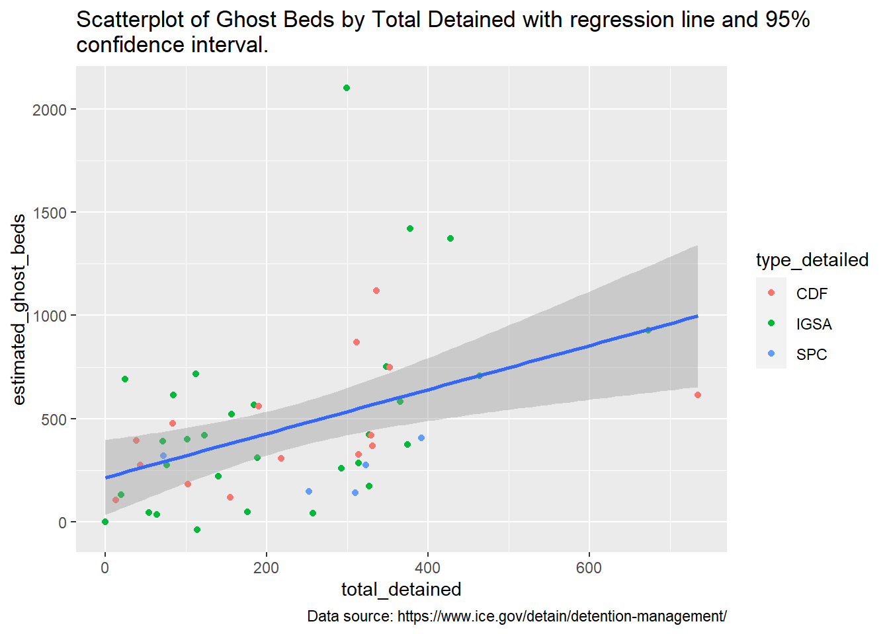
Does the amount of Guaranteed Minimum explain the presence and amount of Ghost Beds? The Pearson’s product-moment correlation between Ghost Beds and Guaranteed Minimum is positive, statistically significant, and very large (\(r = 0.96, t(48) = 22.31, p < .001\)). Using a linear model to predict Ghost Beds by Guaranteed Minimum (Figure 8) explains a statistically significant and very large proportion of the variance (\(R^2 = 0.91, F(1, 48) = 497.86, p < .001, adj. R^2 = 0.91\)). The effect of Guaranteed Minimum on Ghost Beds is statistically significant and positive (\(b = 0.78, t(48) = 22.31, p < .001\)). The presence of Guaranteed Minimums explains 91% of Ghost Beds.
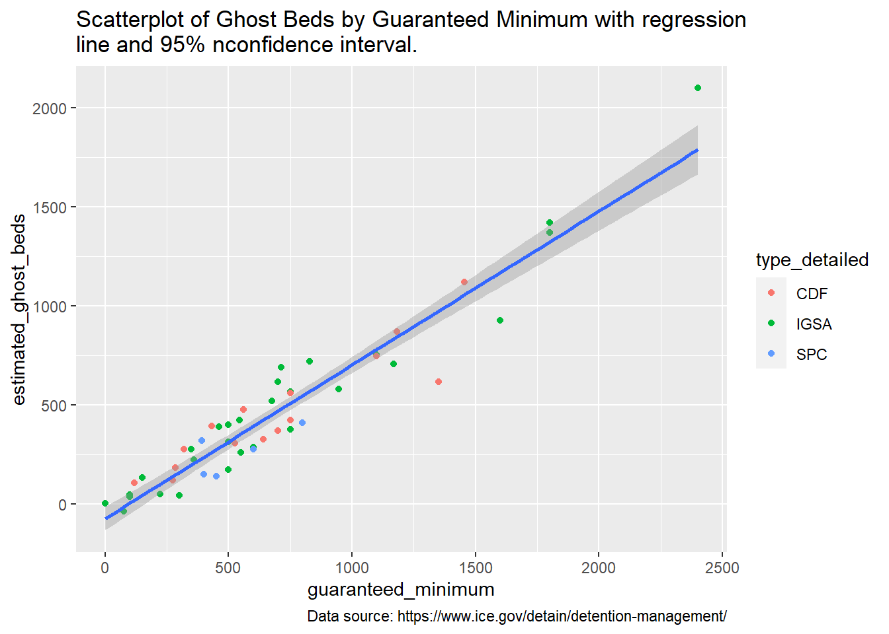
Ghost Beds by Facility Type
Table 6 provides some summary figures for ghost beds by facility type. Just as all SPC’s have guaranteed minimums, all SPC’s also have ghost beds, and they make up 10% of the facilities with ghost beds. There are a total of 1293 ghost beds in SPC’s representing 5.63% of the total number of ghost beds. SPC’s average 258.6 ghost beds per facility which is the lowest among the three types of facilities that have ghost beds.
There are 29 IGSA’s that have ghost beds representing 58% of the facilities with Ghost Beds. There are 14,812 Ghost Beds in IGSA facilities making up 64.51% of all ICE Ghost Beds. With an average of 510.76 Ghost Beds per facility, IGSA’s have the highest mean Ghost Beds of any of the three types of facilities.
There are 15 CDF’s that have Ghost Beds representing 30% of the facilities that have Ghost Beds. There are a total of 6,894 Ghost Beds in CDF’s representing 30.03% of all ICE Ghost Beds. Having an average of 459.6 ghost bed per facility, CDF’s fall in between IGSA’s and SPC’s.
| Type Detailed | n Facilities w. Ghost Beds | % Facilities by Type w. Ghost Beds | % Faciliites w. Ghost Beds | Total Ghost Beds | % Total Ghost Beds | Mean Ghost Beds | SD Ghost Beds |
|---|---|---|---|---|---|---|---|
| CDF | 15 | 88 | 30 | 6894 | 30.03 | 459.60 | 283.59 |
| IGSA | 29 | 40 | 58 | 14812 | 64.51 | 510.76 | 470.99 |
| SPC | 5 | 100 | 10 | 1293 | 5.63 | 258.60 | 114.81 |
Figure 9 provides a violin-sina plot of Ghost Beds by facility type and shows that IGSA’s have the highest mean number of Ghost Beds and several IGSA facilities have a very large number of Ghost Beds. Figure 10 provides a map of Ghost Beds in the continental US. The map shows that Ghost Beds are concentrated on the southern border.
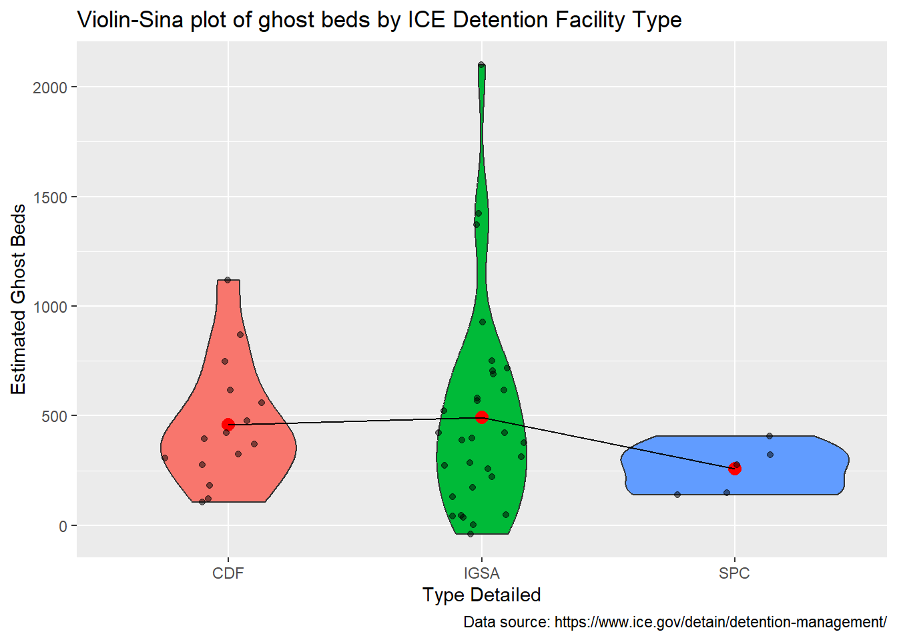
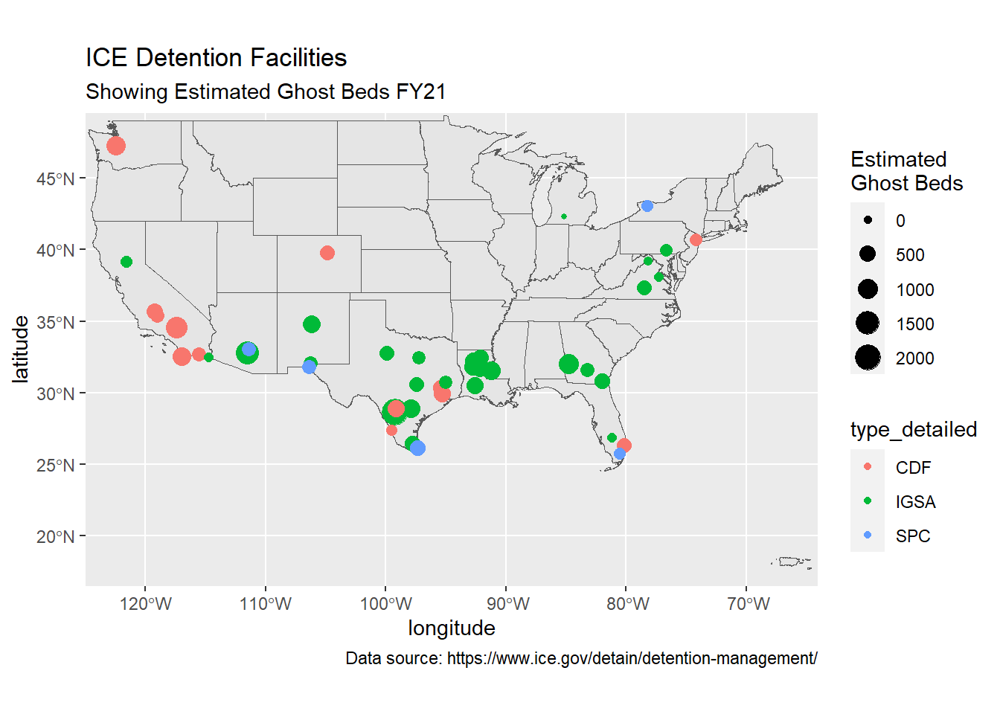
Ghost Bed Cost
As of April, the ICE’s FY21 year to date data table lists 51 facilities with Guaranteed Minimums but unfortunately does not supply the per diem rate for any of those contracts. The DHS budget request for FY21 provides information on 27 facilities with guaranteed minimums (DHS 2020, ICE-O&S-137), and among those facilities (n=27) the mean per diem is $123.04 (SD=43.02). Presumably, the Guaranteed Minimums at the remaining 23 facilities were established after the FY21 budget request. For the purpose of estimating the total cost of Guaranteed Minimums and unused Ghost Beds, for the 23 facilities for which Guaranteed Minimums are unlisted the average of the Guaranteed Minimums per diem rate for the 27 facilities listed in the FY21 budget request are used (DHS 2020, ICE-O&S-137).
Based on reported Guaranteed Minimum per diem rates, and average rates where not reported, the total daily cost of Guaranteed Minimum ICE detention beds is $4,308,391 and the total estimated cost of Ghost Beds is $2,952,525.
Figure 11 shows the Guaranteed Minimum per diem rate by facility type. SPC’s tend to have higher Guaranteed Minimum per diem costs than either CDF’s or IGSA’s. One reason that a large number of IGSA’s guaranteed minimums hover around a per diem of 125 is that many of these facilities are not listed in the FY21 year to date figures and the values are based on averages. It would be good to determine which kinds of facilities have new Guaranteed Minimums. Figure 12 shows the average Guaranteed Minimum cost by facility type. On average, most facilities have roughly similar costs even though IGSA’s and CFS’s are larger. The leveling of average cost may be related to the higher per diems for SPC’s. Figure 13 shows the average Ghost Bed cost by facility type. SPC’s have slightly lower costs than IGSA’s and CDF’s.
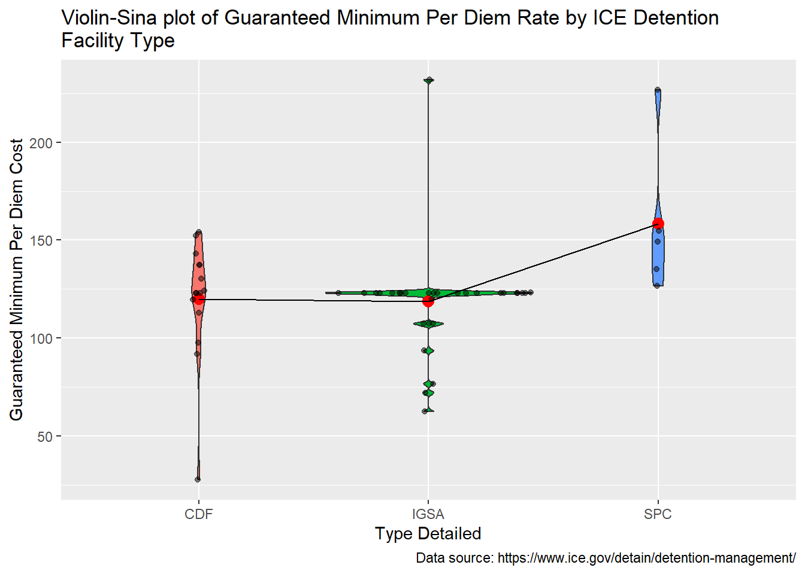
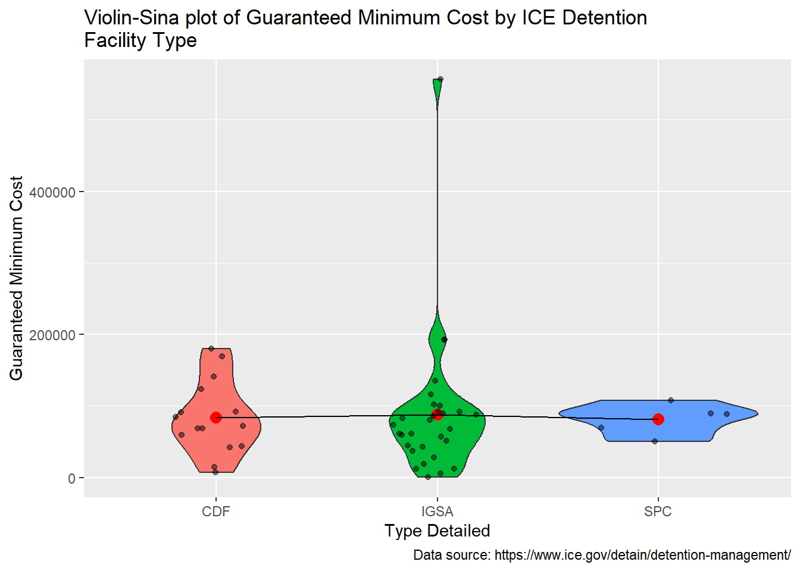
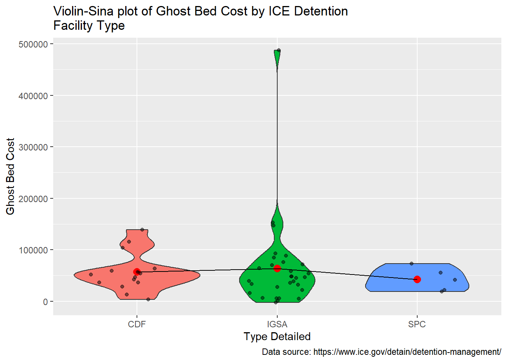
Supplementary
Session Information
Analyses were conducted using the R Statistical language (version 4.2.1; R Core Team, 2022) on Windows 10 x64 (build 19044)
Packages
The following R packages were used used in preparing this document.
- rmarkdown (version 2.18; Allaire J et al., 2022)
- ggthemes (version 4.2.4; Arnold J, 2021)
- effectsize (version 0.8.2; Ben-Shachar MS et al., 2020)
- rio (version 0.5.29; Chan C et al., 2021)
- summarytools (version 1.0.1; Comtois D, 2022)
- janitor (version 2.1.0; Firke S, 2021)
- purrr (version 0.3.5; Henry L, Wickham H, 2022)
- parameters (version 0.20.0; Lüdecke D et al., 2020)
- performance (version 0.10.1; Lüdecke D et al., 2021)
- easystats (version 0.6.0; Lüdecke D et al., 2022)
- see (version 0.7.4; Lüdecke D et al., 2021)
- insight (version 0.18.8; Lüdecke D et al., 2019)
- bayestestR (version 0.13.0; Makowski D et al., 2019)
- modelbased (version 0.8.5; Makowski D et al., 2020)
- correlation (version 0.8.3; Makowski D et al., 2020)
- report (version 0.5.5; Makowski D et al., 2021)
- tibble (version 3.1.8; Müller K, Wickham H, 2022)
- ggstatsplot (version 0.10.0; Patil I, 2021)
- datawizard (version 0.6.4; Patil I et al., 2022)
- sf (version 1.0.9; Pebesma E, 2018)
- ggforce (version 0.4.1; Pedersen T, 2022)
- R (version 4.2.1; R Core Team, 2022)
- ggplot2 (version 3.4.0; Wickham H, 2016)
- forcats (version 0.5.2; Wickham H, 2022)
- stringr (version 1.4.1; Wickham H, 2022)
- tidyverse (version 1.3.2; Wickham H et al., 2019)
- readxl (version 1.4.1; Wickham H, Bryan J, 2022)
- dplyr (version 1.0.10; Wickham H et al., 2022)
- tidyr (version 1.2.1; Wickham H, Girlich M, 2022)
- readr (version 2.1.3; Wickham H et al., 2022)
- knitr (version 1.39; Xie Y, 2022)
- kableExtra (version 1.3.4; Zhu H, 2021)
References
DHS. 2020. “Department of Homeland Security, u.s. Immigration and Customs Enforcement Budget Overview, Fiscal Year 2021 Congressional Justification,” February. https://www.dhs.gov/sites/default/files/publications/u.s._immigration_and_customs_enforcement.pdf.
Hintze, Jerry L., and Ray D. Nelson. 1998. “Violin Plots: A Box Plot-Density Trace Synergism.” The American Statistician 52 (2): 181–84. https://doi.org/10.1080/00031305.1998.10480559.
ICE. 2021. “Detention Management.” https://www.ice.gov/detain/detention-management.
Jameson, Ellyn. 2020. “ICE Detention Through u.s. Marshals Agreements.” Georgetown Immigration Law Journal 35 (1): 279–315. https://www.law.georgetown.edu/immigration-law-journal/in-print/volume-35-number-1-fall-2020/ice-detention-through-u-s-marshals-agreements/.
Selman, Donna, and Paul Leighton. 2010. Punishment for Sale: Private Prisons, Big Business, and the Incarceration Binge. Issues in Crime & Justice. Lanham, Md: Rowman & Littlefield Publishers.
Sidiropoulos, Nikos, Sina Hadi Sohi, Thomas Lin Pedersen, Bo Torben Porse, Ole Winther, Nicolas Rapin, and Frederik Otzen Bagger. 2018. “SinaPlot: An Enhanced Chart for Simple and Truthful Representation of Single Observations over Multiple Classes.” Journal of Computational and Graphical Statistics 27 (3): 673–76. https://doi.org/10.1080/10618600.2017.1366914.
Tukey, John Wilder. 1977. Exploratory Data Analysis. Addison-Wesley Series in Behavioral Science. Reading, Mass: Addison-Wesley Pub. Co.